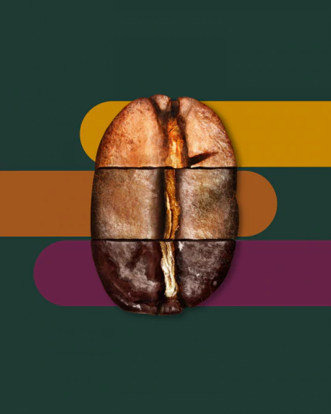

A História do Starbucks
Todos os dias, os parceiros (funcionários) da Starbucks vão trabalhar na esperança de fazer duas coisas: compartilhar um ótimo café com seus amigos e ajudar a tornar o mundo um pouco melhor.
3 min de leitura

PREPARAÇÃO
Níveis de torra
Qual a torra que você prefere? Starbucks clara, torra média ou torra escura? Estas são as torras que fazem parte dos níveis de torra Starbucks.
2 min de leitura